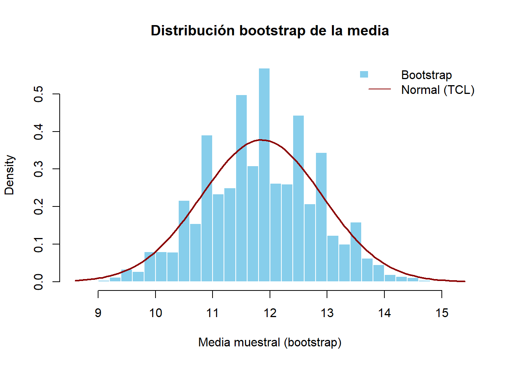

Tema 6 Relación entre Distribuciones. Convergencia en Distribución
6.1 Introducción
En el estudio de los fenómenos aleatorios y en la modelización del azar, las distribuciones de probabilidad desempeñan un papel fundamental. No obstante, en muchas situaciones prácticas no se trabaja con distribuciones exactas, sino con aproximaciones. Comprender cómo se relacionan diferentes distribuciones y bajo qué condiciones una puede aproximarse por otra es una herramienta clave en el análisis de datos, en la inferencia estadística y en la toma de decisiones fundamentadas en incertidumbre.
Este tema aborda dos ideas centrales. Por un lado, el estudio de las relaciones entre distribuciones permite simplificar cálculos complejos utilizando distribuciones límite o aproximadas. Por ejemplo, en vez de trabajar directamente con una distribución binomial con gran número de ensayos, puede resultar mucho más eficiente aproximarla por una normal. Estas aproximaciones son esenciales para desarrollar soluciones prácticas en contextos reales, donde la precisión absoluta cede paso a la eficiencia computacional y a la interpretabilidad.
Por otro lado, se introduce el concepto de convergencia en distribución, una noción fundamental en probabilidad que explica cómo se comportan las distribuciones de ciertas variables aleatorias a medida que se incrementa el tamaño de la muestra o cambia un parámetro clave. Esta idea es la base teórica detrás del Teorema Central del Límite y sustenta muchas de las técnicas estadísticas modernas, desde la estimación mediante remuestreo (bootstrap) hasta el análisis asintótico de estimadores y contrastes.
En el ámbito del análisis de datos, estas herramientas permiten justificar el uso de modelos simplificados en grandes volúmenes de datos, aplicar inferencias sobre parámetros poblacionales o entender el comportamiento de algoritmos estadísticos. En economía y empresa, facilitan la toma de decisiones bajo incertidumbre, el análisis de riesgos, la evaluación de políticas y la previsión basada en grandes muestras o en distribuciones derivadas de simulaciones.
6.2 Relaciones entre distribuciones
En estadística y teoría de la probabilidad, es frecuente que una variable aleatoria se modele inicialmente con una cierta distribución, pero que para facilitar los cálculos o el análisis, se recurra a una distribución aproximada. Estas relaciones entre distribuciones son particularmente útiles cuando los parámetros de la distribución original se encuentran en ciertos rangos que permiten una buena aproximación.
En este apartado se revisan algunas de las aproximaciones clásicas más utilizadas, así como ejemplos prácticos que ilustran sus condiciones de validez.
6.2.1 Aproximaciones clásicas
Binomial ≈ Poisson
La distribución binomial \(B(n, p)\) puede aproximarse por una distribución de Poisson \(\text{Po}(\lambda)\) cuando:
- \(n\) es grande,
- \(p\) es pequeño,
- y \(\lambda = np\) se mantiene constante.
Condiciones típicas:
- \(n \geq 30\)
- \(p \leq 0.1\)
Esta aproximación es útil en contextos como la modelización de defectos poco frecuentes en procesos industriales o incidencias poco comunes en un gran número de observaciones.
Binomial ≈ Normal
Cuando \(n\) es grande, la distribución binomial puede aproximarse por una normal:
\[ B(n, p) \approx \mathcal{N}(np, np(1 - p)) \]
Condiciones típicas:
- \(np \geq 5\)
- \(n(1 - p) \geq 5\)
Corrección por continuidad: Para mejorar la aproximación, se usa una corrección por continuidad. Por ejemplo, para calcular \(P(X \leq k)\), se utiliza:
\[ P(Y \leq k + 0.5), \quad Y \sim \mathcal{N}(np, np(1-p)) \]
Esta aproximación es especialmente útil en análisis de proporciones, encuestas y estudios de comportamiento del consumidor.
Poisson ≈ Normal
Si \(\lambda\) es suficientemente grande, una variable Poisson puede aproximarse por una normal:
\[ \text{Po}(\lambda) \approx \mathcal{N}(\lambda, \lambda) \]
Condición típica: - \(\lambda \geq 10\)
Este caso aparece en problemas de conteo, como el número de llamadas en un centro de atención al cliente por minuto o el número de transacciones por segundo en una plataforma digital.
## Warning: package 'DiagrammeR' is in use and will not be installed
Figura 1: Diagrama de las relaciones de aproximación entre la distribución binomial, Poisson y normal. Las flechas indican que una distribución sirve de aproximación a otra bajo las condiciones señaladas junto a cada flecha. Por ejemplo, una \(B(n,p)\) con \(n\) muy grande y \(p\) muy pequeño (de modo que \(np\) se mantiene aproximadamente constante) se puede aproximar mediante una \(Poisson(n p)\); si \(np\) y \(n(1-p)\) son bastante grandes, \(B(n,p)\) se aproxima bien por una normal; y si \(\lambda\) es grande, \(Poisson(\lambda)\) se aproxima por \(\mathcal{N}(\lambda,\lambda)\).
6.2.2 Condiciones de validez para cada aproximación
Las siguientes condiciones son orientativas y ayudan a decidir si una aproximación es razonable en la práctica:
Binomial ≈ Poisson: válida cuando el número de ensayos \(n\) es grande (por ejemplo, \(n \geq 30\)) y la probabilidad de éxito \(p\) es pequeña (por ejemplo, \(p \leq 0.1\)), de forma que \(\lambda = np\) se mantenga constante y de valor moderado.
Binomial ≈ Normal: se recomienda que tanto \(np \geq 5\) como \(n(1 - p) \geq 5\). Además, la corrección por continuidad mejora significativamente la aproximación cuando \(n\) no es muy grande.
Poisson ≈ Normal: adecuada cuando \(\lambda \geq 10\). A mayor valor de \(\lambda\), mejor será la aproximación, ya que la distribución Poisson se vuelve más simétrica.
Estas condiciones son de carácter práctico y deben verificarse antes de aplicar la aproximación. En caso contrario, se corre el riesgo de obtener resultados imprecisos.
Aplicaciones prácticas: simplificación de cálculos, simulaciones, modelización en contexto económico y empresarial
Estas aproximaciones son fundamentales en numerosos entornos de trabajo donde la eficiencia computacional, la rapidez de decisión y la claridad de interpretación son clave. Algunos ejemplos incluyen:
Simplificación de cálculos: en vez de trabajar con sumas de probabilidades o combinatorias complicadas (como en la binomial), se puede utilizar una distribución más manejable como la normal, con funciones ya integradas en la mayoría de software estadísticos.
Simulación de escenarios: en análisis de datos y econometría, las simulaciones con miles de repeticiones son comunes. Utilizar distribuciones límite (como la normal) permite generar datos de forma más rápida y con menor coste computacional.
Modelización en economía y empresa:
- En estudios de mercado, se modelan proporciones (clientes que compran un producto, votantes que eligen una opción) mediante binomiales, que pueden aproximarse por normales en grandes muestras.
- En análisis de riesgos, incidentes o reclamaciones poco frecuentes (seguros, sistemas de calidad) se modelan con Poisson, y si el número esperado de eventos es alto, se emplea la normal.
- En logística o producción, el número de errores, fallos o llegadas a un sistema se puede modelar inicialmente con Poisson y luego aproximarse por normal si se cumplen las condiciones adecuadas.
Estas aproximaciones también constituyen una introducción natural al uso de métodos asintóticos, fundamentales en técnicas modernas como los contrastes de hipótesis, la inferencia basada en simulación y el aprendizaje automático con grandes volúmenes de datos.
Ejemplos con condiciones de validez
A continuación se presentan algunos ejemplos ilustrativos que muestran cómo aplicar las aproximaciones mencionadas y en qué situaciones son válidas.
Ejemplo 1: Binomial grande, Poisson como aproximación
Supongamos que en una gran fábrica hay 10,000 productos y la probabilidad de que uno sea defectuoso es de 0.001.
\[ X \sim B(10000, 0.001), \quad \lambda = np = 10 \]
Dado que \(n\) es grande y \(p\) es pequeño, podemos aproximar:
\[ X \approx \text{Po}(10) \]
Esto permite simplificar el cálculo de probabilidades como \(P(X = 0)\), \(P(X \leq 5)\), etc., sin tener que calcular combinatorias.
Ejemplo 2: Binomial a Normal con corrección
Sea \(X \sim B(100, 0.4)\). Queremos calcular \(P(X \geq 45)\). Dado que \(np = 40\) y \(n(1 - p) = 60\), se cumple la condición para usar la normal.
\[ X \approx \mathcal{N}(40, 24) \]
Aplicamos la corrección por continuidad:
\[ P(X \geq 45) \approx P(Y \geq 44.5), \quad Y \sim \mathcal{N}(40, 24) \]
Este tipo de aproximación es habitual en estudios de población donde se analizan porcentajes de respuestas o elecciones en muestras grandes.
Ejemplo 3: Poisson con parámetro alto
Si el número de accidentes laborales mensuales sigue una Poisson con \(\lambda = 15\), entonces:
\[ X \sim \text{Po}(15) \approx \mathcal{N}(15, 15) \]
Esto permite usar la normal para construir intervalos de confianza o contrastes, incluso si originalmente se partía de una distribución discreta.
Estas relaciones entre distribuciones son esenciales para aplicar herramientas de inferencia estadística de forma eficiente, especialmente en escenarios donde el volumen de datos es elevado o el tiempo de cálculo es limitado. También constituyen la base intuitiva para introducir el concepto de convergencia en distribución, que será formalizado en el siguiente apartado.
6.3 Convergencia en distribución
Hasta ahora hemos visto cómo algunas distribuciones pueden aproximarse por otras bajo ciertas condiciones. Sin embargo, para dar rigor a estas afirmaciones, es necesario entender en qué sentido una sucesión de distribuciones se aproxima a una distribución límite. Esto nos lleva al concepto fundamental de convergencia de variables aleatorias, y en particular a la convergencia en distribución, también conocida como convergencia débil.
Entre los distintos tipos de convergencia existentes en teoría de la probabilidad, la convergencia en distribución es especialmente relevante en estadística porque:
- Permite justificar aproximaciones como \(B(n, p) \approx \mathcal{N}(np, np(1-p))\) o \(\text{Poisson}(\lambda) \approx \mathcal{N}(\lambda, \lambda)\).
- Aparece de forma natural en resultados fundamentales como el Teorema Central del Límite.
- Se emplea para estudiar el comportamiento asintótico de estadísticos y estimadores cuando el tamaño muestral tiende a infinito.
- Es la base teórica de técnicas modernas como el bootstrap o la validación empírica por simulación.
A diferencia de otras formas más fuertes de convergencia, como la convergencia en probabilidad o en media cuadrática, la convergencia en distribución no requiere que las variables aleatorias estén definidas en un mismo espacio de probabilidad ni que las realizaciones individuales se acerquen. Solo exige que las funciones de distribución acumulada converjan.
En este apartado, exploraremos primero los distintos tipos de convergencia para situar la convergencia en distribución en su contexto teórico. A continuación, abordaremos el Teorema Central del Límite, la convergencia de las distribuciones empíricas, y finalizaremos con aplicaciones relevantes en economía, empresa y análisis de datos.
6.3.1 Tipos de convergencia y definición formal
En teoría de la probabilidad, es fundamental distinguir entre los distintos tipos de convergencia de sucesiones de variables aleatorias. Cada tipo de convergencia expresa una forma diferente en la que una secuencia de variables aleatorias puede aproximarse a una variable aleatoria límite. Estas nociones son esenciales tanto desde un punto de vista teórico como aplicado, especialmente en estadística asintótica y modelización del azar.
A continuación se presentan los principales tipos de convergencia, ordenados de más fuerte a más débil:
6.3.1.1 Convergencia casi segura (convergencia con probabilidad)
Se dice que una sucesión de variables aleatorias \(X_n\) converge casi seguramente a una variable aleatoria \(X\) si:
\[ P\left( \lim_{n \to \infty} X_n = X \right) = 1 \]
Esta forma de convergencia asegura que las realizaciones de \(X_n\) se aproximan indefinidamente a las de \(X\), salvo en un conjunto de probabilidad cero.
6.3.1.2 Convergencia en probabilidad
Se dice que \(X_n \xrightarrow{P} X\) si, para todo \(\varepsilon > 0\):
\[ \lim_{n \to \infty} P(|X_n - X| > \varepsilon) = 0 \]
Es decir, la probabilidad de que \(X_n\) esté lejos de \(X\) se hace cada vez más pequeña a medida que \(n\) crece.
6.3.1.3 Convergencia en media \(r\)-ésima (por ejemplo, en media cuadrática)
Se dice que \(X_n \xrightarrow{L^r} X\) si:
\[ \lim_{n \to \infty} \mathbb{E}[|X_n - X|^r] = 0 \]
Un caso particular importante es \(r = 2\), conocido como convergencia en media cuadrática. Esta convergencia implica la convergencia en probabilidad bajo ciertas condiciones.
6.3.1.4 Convergencia en distribución (o en ley)
Se dice que \(X_n \xrightarrow{d} X\) si la función de distribución acumulada \(F_{X_n}(x)\) converge puntualmente a \(F_X(x)\) en los puntos de continuidad de \(F_X\):
\[ \lim_{n \to \infty} F_{X_n}(x) = F_X(x) \]
Esta es la forma más débil de convergencia y la más utilizada en estadística inferencial, ya que permite estudiar el comportamiento asintótico de secuencias de variables aleatorias sin requerir convergencia en términos más fuertes.
6.3.1.5 Relación entre los tipos de convergencia
Las implicaciones entre los distintos tipos de convergencia pueden resumirse en el siguiente esquema:
\[ \text{Casi segura} \Rightarrow \text{En probabilidad} \Rightarrow \text{En distribución} \]
Además:
\[ \text{En media cuadrática ($L^2$)} \Rightarrow \text{En probabilidad} \]
Sin embargo, las implicaciones no se dan en sentido contrario: - La convergencia en distribución no implica convergencia en probabilidad. - La convergencia en probabilidad no implica convergencia casi segura ni en media. - La convergencia en distribución puede darse incluso si \(X_n\) y \(X\) no están definidas en el mismo espacio de probabilidad.
Esta jerarquía de convergencias proporciona el marco formal necesario para entender los resultados asintóticos y las aproximaciones entre distribuciones que estudiaremos en los siguientes apartados.
Figura 2. Jerarquía entre tipos de convergencia
6.3.2 Teorema Central del Límite (TCL)
El Teorema Central del Límite (TCL) es uno de los resultados más importantes de la teoría de la probabilidad y constituye la base teórica de muchas técnicas estadísticas. Justifica por qué en muchos contextos, incluso cuando los datos individuales no siguen una distribución normal, la distribución de ciertos estadísticos tiende a ser normal cuando el tamaño muestral es grande.
Definición
Sea \(X_1, X_2, \dots, X_n\) una sucesión de variables aleatorias independientes e idénticamente distribuidas (i.i.d.) con:
- \(\mathbb{E}(X_i) = \mu\)
- \(\text{Var}(X_i) = \sigma^2 < \infty\)
Entonces, la variable aleatoria:
\[ Z_n = \frac{\overline{X}_n - \mu}{\sigma / \sqrt{n}} \quad \text{donde} \quad \overline{X}_n = \frac{1}{n} \sum_{i=1}^n X_i \]
converge en distribución a una normal estándar:
\[ Z_n \xrightarrow{d} \mathcal{N}(0,1) \]
Interpretación intuitiva
Aunque los datos individuales \(X_i\) no estén normalmente distribuidos, al tomar una media de muchas observaciones (muestra grande), la distribución de esa media se aproxima a una normal. Cuanto mayor es el tamaño de la muestra, mejor es la aproximación.
Por simplicicdad, en la definición se ha supuesto que las medias y varianzas de las variables aleatorias eran iguales, sin embargo ese supuesto no es necesario, y se puede hacer con cualquier media o varianza. En el siguiente link se explica muy claramente esta afirmación. (.https://bookdown.org/aquintela/EBE/el-teorema-central-del-limite.html)
Este resultado explica por qué la distribución normal aparece con tanta frecuencia en estadística, incluso cuando los fenómenos originales no son normales.
Ejemplos de aplicación en análisis de datos y economía
- Encuestas: al calcular la media de respuestas de una muestra grande (por ejemplo, gasto mensual), el TCL permite aproximar la distribución de la media por una normal, lo cual es clave para construir intervalos de confianza y realizar contrastes de hipótesis.
- Análisis financiero: al modelar rendimientos medios de activos financieros en periodos largos, el TCL justifica el uso de herramientas normales, incluso si los rendimientos individuales tienen colas pesadas o asimetría.
- Control de calidad: en procesos industriales donde se toma una muestra de productos, el TCL permite estimar con precisión el valor medio del parámetro de interés (por ejemplo, peso, tamaño, tiempo de fabricación).
Relación con las aproximaciones vistas
El Teorema Central del Límite justifica las aproximaciones que hemos visto anteriormente, como:
- \(B(n,p) \approx \mathcal{N}(np, np(1-p))\)
- \(\text{Poisson}(\lambda) \approx \mathcal{N}(\lambda, \lambda)\)
En ambos casos, lo que subyace es que se están sumando muchas variables aleatorias independientes (Bernoulli o indicadores de ocurrencia), y su suma se aproxima a una normal, tal como predice el TCL.
Este teorema es esencial en inferencia estadística porque permite aplicar métodos basados en la normalidad en una gran variedad de contextos, incluso cuando los datos originales no son normales.
6.3.3 Convergencia de distribuciones empíricas \(F_n\)
En estadística aplicada y en ciencia de datos es habitual trabajar con muestras y estimar la distribución de una variable aleatoria a partir de sus valores observados. Una herramienta fundamental para ello es la función de distribución empírica, que permite aproximar la distribución teórica a partir de una muestra.
Distribución empírica \(F_n\)
Dada una muestra aleatoria \(X_1, X_2, \dots, X_n\) de una variable aleatoria \(X\), se define la función de distribución empírica como:
\[ F_n(x) = \frac{1}{n} \sum_{i=1}^n \mathbb{I}_{\{X_i \leq x\}} \]
donde \(\mathbb{I}_{\{X_i \leq x\}}\) es una función indicadora que vale 1 si \(X_i \leq x\) y 0 en caso contrario.
\(F_n(x)\) representa la proporción de valores de la muestra que son menores o iguales que \(x\), y constituye una estimación natural de la función de distribución verdadera \(F(x)\).
Convergencia de \(F_n\) a \(F\)
A medida que aumenta el tamaño muestral \(n\), la función de distribución empírica \(F_n(x)\) converge a la verdadera función de distribución \(F(x)\). Esta convergencia se produce uniformemente en todos los puntos \(x\), y se puede expresar formalmente como:
\[ \sup_x |F_n(x) - F(x)| \xrightarrow{a.s.} 0 \]
Esta es una forma fuerte de convergencia (convergencia casi segura), y garantiza que, con suficiente tamaño muestral, la distribución empírica se aproxima arbitrariamente bien a la real.
Teorema de Glivenko-Cantelli (opcional)
Este resultado formaliza la convergencia uniforme de la distribución empírica:
Sea \(X_1, X_2, \dots, X_n\) una muestra i.i.d. de una variable con función de distribución \(F\). Entonces:
\[ \sup_x |F_n(x) - F(x)| \xrightarrow{a.s.} 0 \quad \text{cuando } n \to \infty \]
Este teorema garantiza que, con probabilidad 1, la distribución empírica converge uniformemente a la distribución real a medida que el tamaño muestral crece.
Aplicación práctica
La distribución empírica es ampliamente utilizada en:
- Visualización de datos: al comparar \(F_n(x)\) con distribuciones teóricas (gráficas Q-Q o P-P).
- Simulación y bootstrap: se parte de \(F_n\) para generar nuevas muestras (remuestreo con reemplazo).
- Contrastes no paramétricos: como el test de Kolmogórov-Smirnov, que mide la distancia entre \(F_n\) y una distribución teórica.
6.3.4 Ejemplos y visualizaciones
Ejemplo 1: Convergencia en media cuadrática pero no casi seguramente
Este ejemplo muestra que la convergencia en media cuadrática no implica necesariamente la convergencia casi segura. Simularemos una sucesión de variables aleatorias \(X_n\) definida de la siguiente manera:
\[ X_n = \begin{cases} 1 & \text{con probabilidad } \frac{1}{n} \\ 0 & \text{con probabilidad } 1 - \frac{1}{n} \end{cases} \]
Esto significa que a medida que \(n\) crece, la probabilidad de que \(X_n = 1\) disminuye, pero nunca es cero.
¿Qué vamos a observar?
Convergencia en media cuadrática: la esperanza \(\mathbb{E}(X_n^2) = \mathbb{E}(X_n) = \frac{1}{n} \to 0\). Veremos que el promedio de los cuadrados de los \(X_n\) tiende a 0.
¿Convergencia casi segura?: veremos que, aunque los valores de \(X_n\) son mayoritariamente ceros, nunca dejan de aparecer algunos unos (saltos). Por tanto, no hay una realización fija hacia la que todos los \(X_n\) tiendan.
Simulación en R

Conclusión
Sí hay convergencia en media cuadrática:
En el gráfico de la izquierda observamos que la media de los cuadrados de los \(X_n\) tiende a 0 cuando \(n\) crece. Esto confirma que la sucesión \(X_n\) converge a 0 en media cuadrática.No hay convergencia casi segura:
En el gráfico de la derecha vemos que, aunque los unos aparecen cada vez con menos frecuencia, nunca desaparecen del todo. Es decir, por grande que sea \(n\), siempre existe una probabilidad (aunque pequeña) de que \(X_n = 1\). Por tanto, no hay una realización de la sucesión que se mantenga fija a partir de cierto punto, y eso viola la definición de convergencia casi segura.
Este ejemplo demuestra que la convergencia en media cuadrática no implica convergencia casi segura. Es una excelente ilustración de la jerarquía entre tipos de convergencia y de por qué no deben confundirse.
Ejemplo 2: El método bootstrap como aplicación de la convergencia de \(F_n\)
El método bootstrap es una técnica de remuestreo que permite estimar la distribución de un estadístico (como la media, la mediana, o la varianza) a partir de una única muestra. En lugar de asumir una distribución teórica concreta, se utiliza la distribución empírica \(F_n\) como una aproximación de la distribución real de los datos.
La idea central del bootstrap es que si \(F_n\) se aproxima bien a la distribución verdadera \(F\), entonces al generar nuevas muestras (con reemplazo) a partir de los datos observados, podemos simular el comportamiento del estadístico como si estuviéramos muestreando del modelo original.
¿Qué se persigue? Queremos estimar la distribución de la media muestral sin conocer la distribución de la población original. Para ello:
- Tomamos una muestra original de tamaño \(n\).
- Generamos muchas muestras bootstrap de tamaño \(n\), remuestreando con reemplazo de la muestra original.
- Calculamos la media en cada una de esas muestras bootstrap.
- Observamos cómo se distribuyen esas medias y comparamos su forma con la predicha por el Teorema Central del Límite.
Se observa que la distribución de las medias bootstrap:
- Se aproxima a una normal cuando \(n\) es suficientemente grande.
- Tiene una dispersión similar a la que tendría la distribución real del estadístico si se repitiera el muestreo desde la población.
¿Cuál es el resultado? El bootstrap simula la distribución del estadístico sin necesidad de conocer la verdadera distribución de los datos. Y, gracias a la convergencia en distribución y al hecho de que \(F_n \to F\), esta aproximación es cada vez más precisa conforme aumenta el tamaño muestral.
El ejemplo que sigue permite visualizar cómo el bootstrap se apoya en la distribución empírica y en el Teorema Central del Límite para generar inferencias válidas de forma no paramétrica.
Resultados de la estimación de la distribución de la media mediante bootstrap
Vamos a aplicar el método bootstrap para estimar la distribución de la media muestral a partir de una sola muestra. Usaremos una variable con distribución desconocida (en este caso una exponencial) y observaremos cómo el bootstrap reproduce la forma de la distribución del estadístico.

Interpretación La distribución de las medias bootstrap (en azul) se ajusta notablemente bien a una distribución normal (curva roja), a pesar de que la variable original sigue una distribución exponencial (asimétrica y no normal).
Esto confirma el poder del Teorema Central del Límite y la validez del uso de \(F_n\) (la distribución empírica) para aproximar la distribución de un estadístico.
Este procedimiento permite construir intervalos de confianza o estimar errores estándar sin necesidad de asumir una distribución poblacional conocida.
Ejemplo 3: Comparación de \(F_n\) y \(F\) con el test de Kolmogórov-Smirnov
Este ejemplo muestra cómo se mide formalmente la diferencia entre la distribución empírica \(F_n(x)\) y la distribución teórica \(F(x)\) usando el estadístico de Kolmogórov-Smirnov, definido como:
\[ D_n = \sup_x |F_n(x) - F(x)| \]
Queremos observar cómo \(D_n\) disminuye al aumentar el tamaño muestral, lo que ilustra la convergencia uniforme de \(F_n\) a \(F\), como afirma el Teorema de Glivenko-Cantelli.
Simulación en R

Interpretación
- El estadístico \(D\) mide la máxima diferencia vertical entre la función de distribución empírica \(F_n(x)\) y la función de distribución teórica \(F(x)\).
- En los gráficos se observa que, a medida que aumenta el tamaño de la muestra \(n\), la curva empírica \(F_n(x)\) se ajusta cada vez mejor a la curva teórica \(F(x)\).
- La distancia \(D\) disminuye con \(n\), lo que ilustra de forma empírica el Teorema de Glivenko-Cantelli, que afirma que \(F_n(x) \to F(x)\) uniformemente con probabilidad 1.
Este ejemplo muestra cómo la convergencia de la distribución empírica no solo es una herramienta teórica, sino que tiene aplicaciones prácticas directas como el test de Kolmogórov-Smirnov, muy utilizado en análisis no paramétrico y validación de modelos.
Ejemplo 4 del TCL: Ingresos de clientes (distribución exponencial)
Supongamos que los ingresos diarios de ciertos clientes en una empresa siguen una distribución exponencial con media 100. Esta distribución es muy asimétrica, lo cual la aleja de una normal.
Queremos ver cómo se comporta la distribución de la media muestral para distintos tamaños de muestra.

Interpretación: aunque la distribución original es claramente no normal (muy asimétrica), la distribución de la media muestral se va aproximando a una normal a medida que aumenta el tamaño de la muestra, como predice el TCL.
Ejemplo 5 del TCL: Tiempo de respuesta de clientes (distribución uniforme)
Supongamos ahora que el tiempo de respuesta de los clientes ante una campaña publicitaria sigue una distribución uniforme entre 0 y 10 minutos. Esta distribución es simétrica pero no normal. Observamos cómo evoluciona la distribución de la media muestral a medida que aumenta el tamaño de la muestra.

Interpretación: aunque la variable original (tiempo de respuesta) no sigue una normal sino una distribución uniforme, la distribución de la media muestral se aproxima progresivamente a una distribución normal a medida que se incrementa el tamaño de la muestra.
Esto confirma empíricamente el Teorema Central del Límite y justifica por qué podemos utilizar herramientas basadas en la normalidad (como intervalos de confianza o contrastes) incluso con variables originales no normales, siempre que el tamaño de muestra sea suficientemente grande.
Ejemplo 6 de convergencia en distribución: Distribución normal estándar
A continuación ilustramos mediante una simulación en R cómo la función de distribución empírica \(F_n\) se aproxima a la función de distribución teórica \(F\) al aumentar el tamaño muestral, tal como garantiza el Teorema de Glivenko-Cantelli.
Generamos tres muestras de tamaños crecientes \(n = 10, 50, 500\) de una distribución normal estándar, y comparamos sus funciones de distribución empíricas \(F_n(x)\) con la distribución acumulada teórica \(\Phi(x)\).

Interpretación: En los tres gráficos se comparan las funciones de distribución empíricas \(F_n(x)\) con la función teórica \(\Phi(x)\) de la normal estándar, para distintos tamaños muestrales \(n = 10, 50, 500\).
- Cuando \(n = 10\), la función empírica presenta saltos y desviaciones notables respecto a la distribución teórica.
- Con \(n = 50\), los saltos son menores y el ajuste mejora, aunque sigue habiendo variabilidad.
- A partir de \(n = 500\), \(F_n(x)\) se aproxima muy bien a \(\Phi(x)\), y apenas se distinguen visualmente.
Este comportamiento confirma el Teorema de Glivenko-Cantelli, que garantiza que la función de distribución empírica converge uniformemente a la verdadera función de distribución cuando el tamaño de la muestra tiende a infinito.
Este ejemplo también refuerza la utilidad de \(F_n(x)\) en estadística aplicada, ya que permite aproximar la distribución de una variable aleatoria a partir de observaciones reales, incluso cuando se desconoce su forma exacta.
6.3.5 Aplicaciones en Economía, empresa y análisis de datos
El concepto de convergencia en distribución no es solo una herramienta teórica, sino que se encuentra en el núcleo de muchas aplicaciones modernas en análisis de datos, economía y empresa. Su utilidad principal radica en que permite justificar el uso de distribuciones límite (como la normal) para estadísticos muestrales, incluso cuando los datos originales no siguen distribuciones conocidas.
A continuación se presentan algunas aplicaciones representativas:
1. Justificación asintótica de contrastes y estimadores
Muchos procedimientos de inferencia estadística, como los contrastres de hipótesis y los intervalos de confianza, se basan en el hecho de que ciertos estadísticos convergen en distribución a una normal. Por ejemplo:
- La media muestral \(\overline{X}\) converge a \(\mathcal{N}(\mu, \sigma^2/n)\) bajo condiciones generales (por el TCL).
- En regresión lineal, los estimadores de mínimos cuadrados ordinarios convergen en distribución a una normal multivariante.
Esto permite aplicar resultados normales incluso si la población no es normal, siempre que el tamaño muestral sea grande.
2. Bootstrap y remuestreo
El método bootstrap se basa en el principio de aproximar la distribución en el muestreo de un estadístico (media, mediana, etc.) a través de remuestreo con reemplazo. Bajo ciertas condiciones, se demuestra que la distribución bootstrap converge en distribución a la misma distribución límite que tendría el estadístico original.
Este enfoque es especialmente útil en:
- Estimación de errores estándar sin fórmulas analíticas.
- Construcción de intervalos de confianza en muestras pequeñas.
- Evaluación de la robustez de estimadores.
3. Evaluación de políticas económicas basada en grandes muestras
En estudios de impacto de políticas públicas o programas sociales, se suele estimar el efecto medio del tratamiento (por ejemplo, un subsidio o reforma). Si se cuenta con una muestra grande, la distribución del estimador converge a una normal, lo que permite construir intervalos de confianza o realizar contrastes utilizando esta distribución límite, incluso si la distribución original de los datos es asimétrica o presenta colas pesadas.
4. Inferencia para big data
En contextos de grandes volúmenes de datos (por ejemplo, comportamiento de usuarios, datos financieros de alta frecuencia, registros administrativos masivos), no siempre se conoce la distribución exacta de las variables de interés. Sin embargo, gracias a la convergencia en distribución, es posible:
- Utilizar inferencia basada en resultados asintóticos.
- Justificar la validez de algoritmos de aprendizaje estadístico.
- Evaluar el comportamiento de modelos de predicción en muestras grandes.
La convergencia en distribución permite aplicar resultados normales y métodos de simulación en una amplia gama de problemas económicos y empresariales, facilitando el análisis de fenómenos complejos incluso cuando las distribuciones originales son desconocidas o difíciles de manejar.
6.4 Ejercicios prácticos
Ejercicio 1. Aproximación de la binomial por la distribución de Poisson
Supongamos que en una fábrica se producen piezas electrónicas con una probabilidad de defecto del 1%. Si se inspecciona una muestra de 100 piezas:
- Sea \(X \sim B(100, 0.01)\) el número de piezas defectuosas.
- Queremos calcular \(P(X = 2)\), es decir, la probabilidad de encontrar exactamente 2 defectuosos.
Se pide:
- Calcular \(P(X = 2)\) exactamente usando la fórmula de la binomial.
- Aproximar \(P(X = 2)\) usando una distribución de Poisson.
- Comparar ambos resultados e interpretar.
Solución
1. Cálculo exacto con la distribución binomial:
\[ P(X = 2) = \binom{100}{2} \cdot (0.01)^2 \cdot (0.99)^{98} \]
Calculamos:
- \(\binom{100}{2} = \frac{100 \cdot 99}{2} = 4950\)
- \((0.01)^2 = 0.0001\)
- \((0.99)^{98} \approx 0.366\)
Entonces:
\[ P(X = 2) \approx 4950 \cdot 0.0001 \cdot 0.366 = 0.181 \]
2. Aproximación con una distribución de Poisson:
Usamos que si \(X \sim B(n, p)\), con \(n\) grande y \(p\) pequeño, entonces:
\[ X \approx \text{Poisson}(\lambda = np) = \text{Poisson}(1) \]
Entonces:
\[ P(X = 2) \approx \frac{1^2}{2!} e^{-1} = \frac{1}{2} \cdot \frac{1}{e} \approx 0.184 \]
Como resultado se ha obtenido:
- Exacto (binomial): \(P(X = 2) \approx 0.181\)
- Aproximado (Poisson): \(P(X = 2) \approx 0.184\)
La diferencia es mínima: la aproximación de Poisson simplifica los cálculos y es muy aceptable en este caso, ya que \(n = 100\) es suficientemente grande y \(p = 0.01\) es pequeño.
Interpretación: Este ejercicio muestra cómo aplicar la aproximación binomial → Poisson, una herramienta práctica cuando el número de ensayos es grande y la probabilidad de éxito es pequeña. Es útil en contextos donde calcular la binomial exacta puede ser costoso, y demuestra cómo las relaciones entre distribuciones permiten simplificar problemas sin perder precisión significativa.
Ejercicio 2. Aproximación de la binomial por la distribución normal
Una empresa realiza un estudio sobre el cumplimiento puntual de sus envíos. Se sabe que, históricamente, el 80% de los pedidos se entregan a tiempo. Se selecciona una muestra aleatoria de 100 envíos.
Sea \(X \sim B(100, 0.8)\) el número de pedidos entregados puntualmente.
Queremos estimar la probabilidad de que al menos 85 pedidos lleguen a tiempo, es decir, \(P(X \geq 85)\), usando:
- La fórmula exacta de la binomial (solo se planteará, no se calculará a mano).
- La distribución normal sin corrección por continuidad.
- La distribución normal con corrección por continuidad.
- Comparación e interpretación.
Solución
Parámetros de la binomial:
\[ n = 100, \quad p = 0.8, \quad \mu = np = 80, \quad \sigma = \sqrt{np(1 - p)} = \sqrt{100 \cdot 0.8 \cdot 0.2} = \sqrt{16} = 4 \]
1. Cálculo exacto (no se desarrolla):
\[ P(X \geq 85) = \sum_{x=85}^{100} \binom{100}{x} (0.8)^x (0.2)^{100 - x}=0.0951 \]
# Parámetros
n <- 100
p <- 0.8
# Cálculo exacto de P(X >= 85)
prob_exacta <- pbinom(84, size = n, prob = p, lower.tail = FALSE)
prob_exacta## [1] 0.1285055Es complejo para hacerlo a mano ⇒ se recurre a una aproximación (si se hiciera a mano habría que calcular 16 probabilidades individuales para agregarlas, por lo que es muy laborioso y se muestra con R).
2. Aproximación normal sin corrección por continuidad:
Explicación del cálculo con distribución normal
Para aproximar la probabilidad \(P(X \geq 85)\) cuando \(X \sim B(100, 0.8)\), se utiliza una distribución normal con la misma media y desviación típica:
- \(\mu = np = 100 \cdot 0.8 = 80\)
- \(\sigma = \sqrt{np(1 - p)} = \sqrt{100 \cdot 0.8 \cdot 0.2} = \sqrt{16} = 4\)
En este caso (sin correción por continuidad), se sustituye directamente la binomial por una normal:
\[ P(X \geq 85) \approx P(Z \geq \frac{85 - 80}{4}) = P(Z \geq 1.25) \]
Buscando en la tabla de la normal estándar:
\[ P(Z \geq 1.25) = 1 - F(1.25) \approx 1 - 0.8944 = 0.1056 \]
3. Aproximación normal con corrección por continuidad:
La corrección por continuidad consiste en ajustar el valor discreto al entorno continuo. Como queremos \(P(X \geq 85)\), pasamos a:
\[ P(Y \geq 84.5), \quad \text{donde } Y \sim \mathcal{N}(80, 4) \]
Entonces:
\[ Z = \frac{84.5 - 80}{4} = 1.125 \]
\[ P(Z \geq 1.125) = 1 - F(1.125) \approx 1 - 0.8690 = 0.1310 \]
Nota didáctica: ¿Por qué se aplica la corrección por continuidad?
Cuando usamos la distribución normal para aproximar una binomial, debemos tener en cuenta que:
- La binomial es discreta.
- La normal es continua.
Por ejemplo:
\[ P(X \geq 85) = P(X = 85) + P(X = 86) + \cdots + P(X = 100) \]
En la normal se calcula el área bajo la curva, por eso se sustituye por:
\[ P(X \geq 85) \approx P(Y \geq 84.5) \]
Regla práctica:
| Binomial | Normal (con corrección) |
|---|---|
| \(P(X \geq k)\) | \(P(Y \geq k - 0.5)\) |
| \(P(X \leq k)\) | \(P(Y \leq k + 0.5)\) |
| \(P(X = k)\) | \(P(k - 0.5 < Y < k + 0.5)\) |
La corrección mejora el ajuste porque tiene en cuenta que la binomial toma valores discretos, mientras que la normal es continua.
\[ Z = \frac{85 - 80}{4} = 1.25 \]
\[ P(X \geq 85) \approx P(Z \geq 1.25) = 1 - F(1.25) \approx 1 - 0.8944 = 0.1056 \]
\[ P(X \geq 85) \approx P(Y \geq 84.5), \quad Y \sim \mathcal{N}(80, 16) \]
\[ Z = \frac{84.5 - 80}{4} = 1.125 \]
\[ P(Z \geq 1.125) = 1 - \Phi(1.125) \approx 1 - 0.869 = 0.131 \]
Como resultado tenemos:
| Método | Probabilidad aproximada |
|---|---|
| Binomial exacta | 0.095 |
| Normal sin corrección | 0.106 |
| Normal con corrección | 0.131 |
Interpretación:
- La aproximación normal es válida porque se cumplen las condiciones:
\(np = 80 \geq 5\), \(n(1 - p) = 20 \geq 5\)
- La corrección por continuidad mejora el ajuste, ya que la binomial es discreta y la normal es continua.
- Este tipo de aproximación permite resolver problemas de forma rápida en estudios de calidad, logística o análisis de eficiencia.
El ejercicio refuerza el papel del Teorema Central del Límite como herramienta para pasar de una distribución discreta a una continua.
❓ ¿Por qué la corrección por continuidad se aleja más del valor exacto en este caso?
En el ejemplo de la aproximación binomial-normal:
| Método | Probabilidad aproximada |
|---|---|
| Binomial exacta | 0.095 |
| Normal sin corrección | 0.106 |
| Normal con corrección | 0.131 |
Aunque la corrección por continuidad se considera una mejora técnica, no siempre se traduce en una mejor aproximación numérica. En este caso, la normal con corrección da un valor más lejano al exacto que la normal sin corregir.
📌 ¿Por qué ocurre?
- La corrección por continuidad ajusta la normal (continua) a la binomial (discreta) desplazando el umbral:
\(P(X \geq 85) \rightarrow P(Y \geq 84.5)\) - Esto amplía el área bajo la curva, aumentando la probabilidad estimada.
- En los extremos de la distribución (colas), la binomial y la normal pueden diferir más. La normal tiende a sobreestimar las colas.
- La corrección mejora el ajuste estructural, pero puede exagerar la probabilidad cuando se trata de eventos poco frecuentes.
✅ Conclusión didáctica
La corrección por continuidad mejora la adaptación entre una distribución continua y una discreta, pero no garantiza un ajuste numérico más preciso en todos los casos.
Lo importante es que respeta mejor la estructura de la binomial, especialmente cuando se trabaja con rangos o se realizan contrastes.
Ejercicio 3. Función de distribución empírica \(F_n(x)\)
Se ha registrado el tiempo (en minutos) que tardan 8 empleados en resolver una tarea:
\[ \{4, 6, 5, 3, 5, 4, 7, 6\} \]
Se pide:
- Calcular la función de distribución empírica \(F_n(x)\) para esta muestra.
- Representar gráficamente \(F_n(x)\) (forma escalonada).
- Indicar el valor de \(F_n(5)\), \(F_n(6.5)\), y \(F_n(10)\).
- Interpretar qué significa \(F_n(x)\) y cómo se relaciona con la función de distribución teórica.
Solución:
Ordenamos los datos:
\[ \{3, 4, 4, 5, 5, 6, 6, 7\} \]
Recordamos la definición:
\[ F_n(x) = \frac{\text{número de observaciones} \leq x}{n} \]
Donde \(n = 8\). Calculamos \(F_n(x)\) para los valores distintos observados:
| \(x\) | \(F_n(x)\) |
|---|---|
| 3 | \(\frac{1}{8} = 0.125\) |
| 4 | \(\frac{3}{8} = 0.375\) |
| 5 | \(\frac{5}{8} = 0.625\) |
| 6 | \(\frac{7}{8} = 0.875\) |
| 7 | \(\frac{8}{8} = 1.000\) |
Entre valores, la función se mantiene constante.
- \(F_n(5) = 0.625\)
- \(F_n(6.5) = F_n(6) = 0.875\)
- \(F_n(10) = 1\) (todos los valores son menores o iguales)
Representación gráfica (escalonada)
Pueden representarlo como una función escalonada que salta en cada valor observado. El salto en cada punto es de \(\frac{1}{8}\), y se mantiene constante entre valores.

Interpretación: La función \(F_n(x)\) representa la proporción acumulada de observaciones hasta \(x\). Es una herramienta muy útil para:
- Visualizar la distribución de los datos
- Comparar con distribuciones teóricas (como la normal o exponencial)
- Realizar tests de bondad de ajuste (como Kolmogórov-Smirnov)
- Servir como base para el bootstrap
En este caso, por ejemplo, podemos decir que el 62.5% de los empleados tardaron 5 minutos o menos en completar la tarea.
Ejercicio 4. Jerarquía entre tipos de convergencia
Se presentan tres sucesiones de variables aleatorias \(\{X_n\}\), todas con valor esperado 0 y varianzas decrecientes. Se indica el tipo de convergencia que verifican respecto a una variable aleatoria \(X \equiv 0\). En cada caso, responde:
- ¿Qué tipo de convergencia se verifica?
- ¿Qué se puede demostrar a partir de ella?
- ¿Qué otras convergencias no se pueden asegurar?
- Justifica tu razonamiento brevemente.
Casos propuestos
a) La sucesión \(X_n\) verifica que \(\mathbb{E}[(X_n - 0)^2] \to 0\)
b) La sucesión \(X_n\) verifica que \(P(|X_n| > \varepsilon) \to 0\) para todo \(\varepsilon > 0\)
c) La sucesión \(X_n\) verifica que \(P(\lim_{n \to \infty} X_n = 0) = 1\)
Solución guiada
🔹 Caso a) Se verifica que:
\[ \lim_{n \to \infty} \mathbb{E}[|X_n|^2] = 0 \]
Esto es convergencia en media cuadrática hacia 0:
\[
X_n \xrightarrow{L^2} 0
\]
Demostración:
Por definición, la convergencia en media \(r\)-ésima se cumple si:
\[
\mathbb{E}[|X_n - X|^r] \to 0
\]
En este caso, con \(r = 2\) y \(X = 0\), se cumple.
Esto implica:
- \(X_n \xrightarrow{P} 0\) (convergencia en probabilidad)
- \(X_n \xrightarrow{d} 0\) (convergencia en distribución)
y no implica:
- No se puede concluir que \(X_n \to 0\) casi seguramente.
- Tampoco garantiza que las trayectorias converjan punto a punto.
🔹 Caso b) Se verifica que:
\[ \forall \varepsilon > 0,\quad P(|X_n| > \varepsilon) \to 0 \]
Esto es la definición de convergencia en probabilidad hacia 0:
\[
X_n \xrightarrow{P} 0
\]
Demostración:
La definición formal de convergencia en probabilidad se cumple directamente por hipótesis.
Lo qué implica:
- \(X_n \xrightarrow{d} 0\) (convergencia en distribución)
y no implica:
- No implica convergencia en media cuadrática: podrían existir varianzas grandes pero con probabilidad concentrada.
- No implica convergencia casi segura.
🔹 Caso c) Se verifica que:
\[ P\left( \lim_{n \to \infty} X_n = 0 \right) = 1 \]
Esto es convergencia casi segura (también llamada con probabilidad 1):
\[
X_n \xrightarrow{a.s.} 0
\]
Demostración:
La hipótesis coincide exactamente con la definición de convergencia casi segura.
Lo que implica:
- \(X_n \xrightarrow{P} 0\)
- \(X_n \xrightarrow{d} 0\)
y no implica:
- No implica convergencia en media cuadrática (podrían existir valores extremos poco frecuentes que inflen la varianza)
Conclusión general
Este ejercicio ilustra que:
- La convergencia casi segura es la más fuerte.
- La convergencia en distribución es la más débil.
- Cada tipo de convergencia implica otras más débiles, pero no al revés.
Jerarquía:
\[ X_n \xrightarrow{a.s.} X \Rightarrow X_n \xrightarrow{P} X \Rightarrow X_n \xrightarrow{d} X \] \[ X_n \xrightarrow{L^2} X \Rightarrow X_n \xrightarrow{P} X \]
6.5 Ejercicio guiado en R
Supongamos que una empresa registra el número de unidades vendidas por día durante una semana:
\[ \text{Ventas} = \{12,\ 9,\ 13,\ 16,\ 8,\ 14,\ 11\} \]
Queremos:
- Estimar la media de ventas por día.
- Estimar la distribución de la media mediante bootstrap.
- Comparar visualmente la distribución bootstrap con una distribución normal (Teorema Central del Límite).
- Reflexionar sobre el uso de aproximaciones en contextos con pocos datos.
Resolución guiada con R
set.seed(2025)
# Datos originales
ventas <- c(12, 9, 13, 16, 8, 14, 11)
n <- length(ventas)
# Estadístico original
media_original <- mean(ventas)
media_original## [1] 11.85714# Bootstrap
B <- 5000
medias_bootstrap <- replicate(B, mean(sample(ventas, size = n, replace = TRUE)))
# Estimación normal según TCL
media_hat <- media_original
sd_hat <- sd(ventas) / sqrt(n)
# Gráfico
hist(medias_bootstrap, probability = TRUE, col = "skyblue", breaks = 40,
main = "Distribución bootstrap de la media",
xlab = "Media muestral (bootstrap)", border = "white")
curve(dnorm(x, mean = media_hat, sd = sd_hat),
add = TRUE, col = "darkred", lwd = 2)
legend("topright", legend = c("Bootstrap", "Normal (TCL)"),
fill = c("skyblue", NA), border = c("white", NA),
lty = c(NA, 1), col = c("skyblue", "darkred"), bty = "n")
Interpretación: - El histograma representa la distribución empírica de la media de ventas por día, generada mediante remuestreo bootstrap a partir de la muestra original. - La curva representa la aproximación normal basada en el Teorema Central del Límite (TCL), utilizando la media y desviación típica estimadas de los datos originales. - Aunque la muestra es pequeña (\(n = 7\)), la distribución bootstrap ya muestra una forma aproximadamente simétrica y unimodal, próxima a una distribución normal. - Esto sugiere que la distribución de la media muestral converge en distribución hacia una normal, como predice el TCL.
Además, se observa que:
- El bootstrap no necesita asumir normalidad de los datos originales.
- La aproximación normal basada en el TCL puede ser razonable incluso con muestras pequeñas, aunque con mayor incertidumbre.